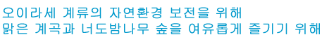
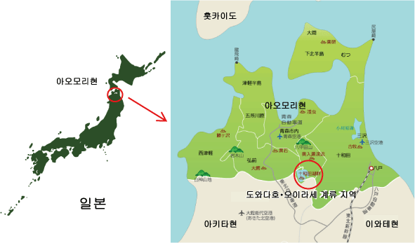

도와다하치만타이(十和田八幡平)국립공원에 있는 <오이라세 계류(溪流)>는 후세에 길이 남겨야 할 귀중한 자연환경이자 아름다운 풍경으로 이에 대한 보전은 매우 중요합니다. 또한 이곳은 아오모리현 안팎에서 연간 약 280만 명이 찾는 아오모리를 대표하는 경승지이자 관광지로 앞으로 한층 더 높은 관광활성화가 필요합니다.
이에 민간이 하나되어 <오이라세 계류>의 자연환경 보전에 이바지하는 활동을 하자는 취지로 산업관광・자연환경・행정 각 기관이 <오이라세 계류 에코투어리즘 프로젝트 실행위원회> 를 만들어 2008년부터 <오이라세 계류 에코투어리즘 프로젝트>를 실시하기로 하였습니다.
이 프로젝트의 목적은 오이라세 계류의 자연환경 보전활동과 10월 제5주에 실시하는 승용차운행 규제운동을 통해 아오모리현을 방문하는 관광객과 주민에게 자연환경 보전을 널리 알리고 계몽하여 해당지역을 영속적으로 보전하고 자연환경을 활용하여 해당지역의 지역발전과 관광진흥을 도모하는 것 입니다.
민관이 하나되어 협력활동을 함으로써 오이라세 계류의 자연가치 제고와 계류의 매력을 일본 전역에 전하고자 합니다.
